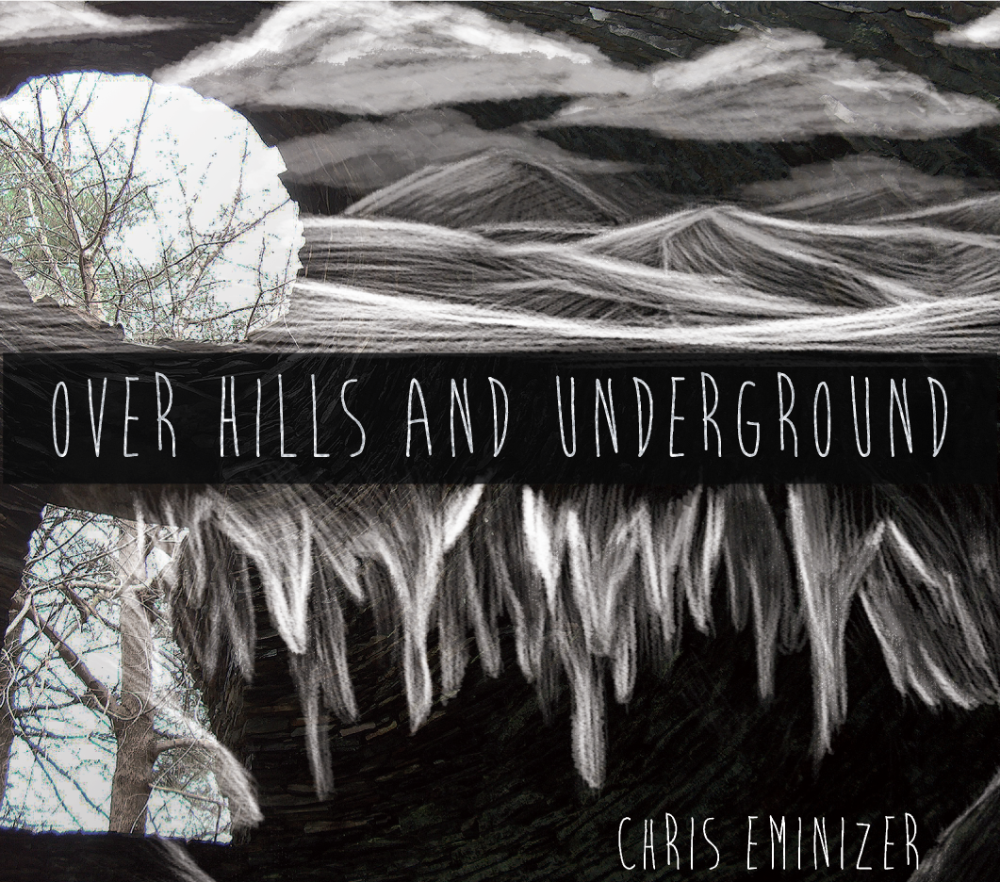

introduction
Chris Eminizer is a musician based in New York that composes music with strong woodwind and acoustic parts. He was releasing his newest EP, titled Over Hills and Underground, and needed an artist for the album art.
The music on his newest EP (according to his website) 'blends imaginative and introspective lyrics with weaving, ethereal music'. Chris already had an idea of the mood he wanted to portray, and had personally taken photographs from inside of a well as inspiration and direction for the album artwork. My mission was to create an ecowallet album design somehow incorporating his images and correctly representing the music style of the album.
 final product
The songs on the album are introspective and deeply philosophical, so I thought it inappropriate to design the artwork to be bright and illustrative like most of my other work. The images provided were relatively dark, so I decided to go with white chalky, and perhaps even ghostly, imagery to reflect the mood and topics discussed throughout the EP. The lyrics deliver a new perspective on common questions and topics. I chose to keep the photographs as they were, representing those common problems and topics, and relied on my monotonal artwork to represent that new perspective.
final product
The songs on the album are introspective and deeply philosophical, so I thought it inappropriate to design the artwork to be bright and illustrative like most of my other work. The images provided were relatively dark, so I decided to go with white chalky, and perhaps even ghostly, imagery to reflect the mood and topics discussed throughout the EP. The lyrics deliver a new perspective on common questions and topics. I chose to keep the photographs as they were, representing those common problems and topics, and relied on my monotonal artwork to represent that new perspective.
The Over Hills and Underground EP is now available for purchase on iTunes and CDBaby.
{kind=link}
{kind=link}
{kind=link}